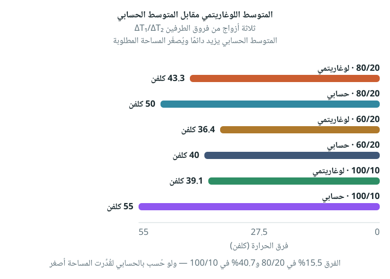

فرق الحرارة المتوسط اللوغاريتمي
فرق الحرارة المتوسط اللوغاريتمي هو الفرق الحراري الفعّال في المبادل: LMTD = (ΔT₁−ΔT₂)/ln(ΔT₁/ΔT₂). يقلّ دائمًا عن المتوسط الحسابي، ويُضرب في U والمساحة لحساب الحمل: Q = U·A·LMTD.
درجة الحرارة في المبادل لا تتغيّر تغيّرًا خطيًّا على طول المساحة: كل شريحة تنقل حرارة بمقدار يتناسب مع فرق الحرارة اللحظي عندها، فكلما اقترب المائعان قلّ المنقول وتباطأ التغيّر، فيأخذ الفرق صورة أسّية. متوسط دالة أسّية على طول القناة هو المتوسط اللوغاريتمي لا الحسابي، ولهذا يعطي التعريف LMTD = (ΔT₁−ΔT₂)/ln(ΔT₁/ΔT₂) قيمة أقل من المتوسط الحسابي دائمًا. في تدفّق متعاكس بفرقين 80 و20 كلفن يكون LMTD = 43.3 كلفن بينما المتوسط الحسابي 50 كلفن، أي أن استعمال الحسابي يبالغ في الفرق الفعّال ويُخرج مساحة أصغر من اللازم بنحو 13%. ولذلك تربط المعادلة الأساسية للمبادل الحمل بالمساحة عبر Q = U·A·LMTD، وفي المسارات المتعددة أو المتقاطعة تُضرب بالمُعامل F الذي يقلّ عن الواحد.
كيف تعمل الظاهرة؟
الحرارة تُنقل شريحةً شريحةً بحسب فرق الحرارة عند كل موضع، وكل شريحة تبرد المائع الساخن وتُدفّئ البارد بمقدار يتناسب مع ΔT اللحظي. النتيجة معادلة تفاضلية حلها دالة أسّية في المساحة: ΔT(x) = ΔT₁·exp(−U·P·x/(ṁ·cp))، حيث P محيط المقطع. لأن الدالة أسّية فإن متوسطها على كامل الطول يُحسب باللوغاريتم لا بالجمع والقسمة، وهذا هو أصل التعريف ومصدر كلمة اللوغاريتمي فيه.
العلاقة بالأرقام
مثال محسوب: ΔT₁ = 80 كلفن وΔT₂ = 20 كلفن ⇒ LMTD = 60/ln(4) = 43.3 كلفن. لحمولة 500 كيلوواط ومعامل كلي U = 1200 واط/(م²·كلفن) تكون المساحة 500,000/(1200×43.3) = 9.6 م²؛ ولو استُخدم المتوسط الحسابي 50 كلفن لخُرجت 8.3 م² فقط أي مساحة ناقصة 14% تظهر عجزًا في الحمل عند التشغيل.
مفاهيم متقاربة
LMTD ليس فرق الحرارة عند أحد الطرفين ولا متوسطًا لأنواع أخرى؛ المتوسط الحسابي يصلح فقط عندما يكون الفرقان متقاربين (أقل من 10%) فيُستعمل اختصارًا. كما أنه ليس بديلًا عن طريقة الفعالية وعدد وحدات النقل: LMTD يحتاج معرفة درجات حرارة الخروج الأربع (مسألة تحقّق)، أما ε–NTU فتحسب الحمل من درجتي الدخول وحدها (مسألة تصميم).
حدود التطبيق
يفشل التعريف عند تساوي الفرقين فتصبح النسبة 1 واللوغاريتم صفرًا؛ تُستعمل حينها النهاية LMTD = ΔT₁. ويفشل كذلك عند تغيّر السعة الحرارية تغيّرًا كبيرًا، أو وجود طور متغيّر جزئيًّا، أو أكثر من قناة واحدة، أو تسرّب بين المسارات. وفي المبادلات متعددة المسارات يجب ضرب الناتج بعامل التصحيح F (0.7–0.95 عادةً)؛ وإغفاله يُبالغ في الأداء ويُصغّر المساحة المطلوبة.

| الكمية | القيمة | المصدر |
|---|---|---|
| LMTD لزوج 80/20 كلفن | 43.3 كلفن | [1] |
| مبالغة المتوسط الحسابي في 80/20 | 15.5 % | [1] |
| مبالغة المتوسط الحسابي في 100/10 | 40.7 % | [1] |
| معادلة الحمل الحراري للمبادل | Q = U·A·LMTD واط | [2] |
المصادر
- 1 Arithmetic and Logarithmic Mean Temperature Difference — The Engineering ToolBox. www.engineeringtoolbox.com/arithmetic-logarithmic-mean-temperature-d_436.html · اطُّلع عليه 2026-11-19
- 2 Heat Exchangers - Overall Heat Transfer Coefficients — The Engineering ToolBox. www.engineeringtoolbox.com/heat-transfer-coefficients-exchangers-d_450.html · اطُّلع عليه 2026-11-19
- 3 Logarithmic mean temperature difference — Wikipedia (الإنجليزية). en.wikipedia.org/wiki/Logarithmic_mean_temperature_difference · اطُّلع عليه 2026-11-19
استشهد بهذا المصطلح
الصيغتان مبنيتان من بيانات الصفحة نفسها: العنوان والتاريخ ورابط النسخة المنشورة.
فرق الحرارة المتوسط اللوغاريتمي. (2026). ديوان المعرفة — انفراد. https://infiradev.com/diwan/terms/lmtd.html
@misc{lmtd2026,
title = {فرق الحرارة المتوسط اللوغاريتمي},
howpublished = {{ديوان المعرفة — انفراد} — مرجع علمي عربي},
year = {2026},
url = {https://infiradev.com/diwan/terms/lmtd.html},
urldate = {2026-11-19},
note = {مراجعة علمية: عبدالله الهويدي — مراجعة في تطبيق انفراد}
}
راجعه: عبدالله الهويدي — مراجعة في تطبيق انفراد · 2026-11-19 · آخر تحديث 2026-11-19